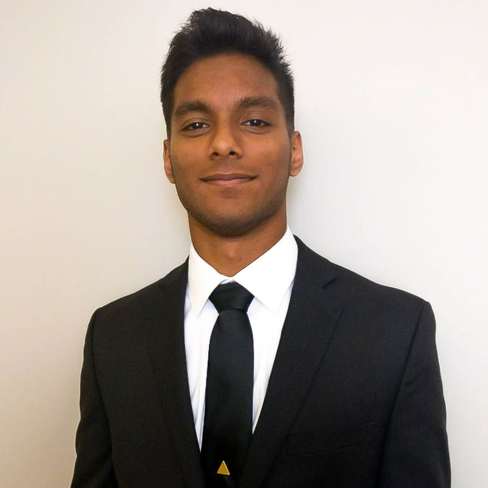
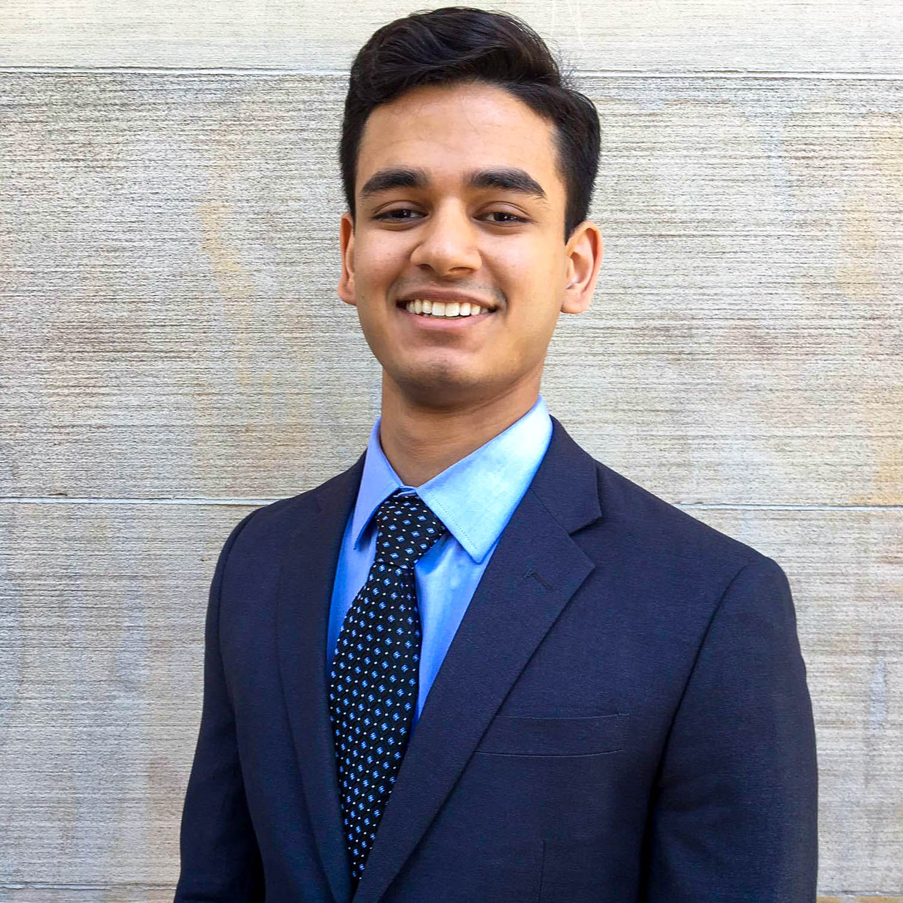
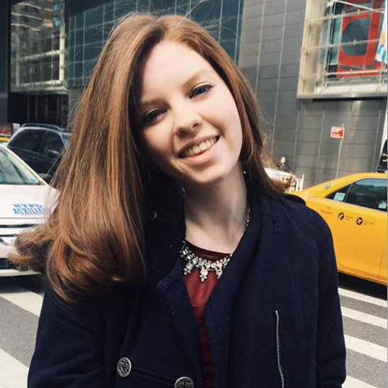

Jackie Torres - CEO
Jackie Torres is a senior in the College of Business concentrating in Finance and double minoring in Computer Science and Real-Estate. This is Jackie’s second year in CHF, in which she previously co-ran the Absolute Return Strategy fund and lead the organization’s recruitment efforts as the Chief Personnel Officer. She previously interned as a data analyst at Enterprise Technology Research and investment analyst at Basin. Her interests include: sci-fi, technology, latin dance, and international politics.
Anderson Koh - CFO
Anderson "Yun" Koh is a senior in the School of Hotel Administration. Anderson started his career in hospitality industry where he focused on hotel and F&B operations. He then made his career transition into the finance industry working at American Express and Capital Group American Funds. Having co-founded the Cornell Hedge Fund, Anderson is looking to continue adding values to this organization through challenging the status quo.
Shaun Yan - COO
Shaun Yan is a junior in the School of Hotel Administration/ College of Business concentrating in Finance, Accounting, and Real Estate with a Real Estate Minor. He is interning with GIC, Singapore's sovereign wealth fund next summer. His other involvements at Cornell University include Treasurer of the Singapore Students' association and Co-Founder of the Refresh Bolivia Cornell Chapter. He loves playing squash, playing contemporary pop songs on the piano by ear, and having meaningful conversations with people.
Shlagha Karjee - CCO
Shlagha Karjee is a junior majoring in Economics and Mathematics at the College of Arts and Sciences. This past summer she interned at Fidelity Institutional Asset Management on the Investment Risk team. Her hobbies include dance and listening to podcasts.
Nikan Ansari - CPO
Nikan Ansari is a junior in the School of Industrial and Labor Relations. This past summer he interned at a special situations investment bank focused on the emerging markets. Previously he was the founder of ITCM Group LLC., a diversified consumer goods wholesaler. At Cornell he is also the Head of Africa for the Global Economics and Finance Society. His interests include Japanese pens.
Savarn Dontamsetti - CTO

Savarn Dontamsetti is a sophomore majoring in Operations Research & Information Engineering and Computer Science. This past summer he interned at Diversifyre, a tech startup in Philadelphia. Savarn enjoys Robotics, Hackathons, and modeling (both mathematical and fashion) and hopes to start his career in the finance industry. In his free time, he loves weight lifting and playing soccer.
Dewan Ahmed - Student Advisor

Dewan Ahmed is a senior in the School of Hotel Administration, concentrating in Finance. This past summer, he interned with J.P. Morgan within the Sales & Trading division. Other than being one of the founders of the Cornell Hedge Fund, he is a TA for Finance and is a student advisor for the National Society of Minorities in Hospitality (NSMH). His interests include social work, lifting/nutrition, and basketball.
Alexander Downey - Chief Strategist
Alex Downey is a junior Operations Research and Information Engineering major in the Engineering school. His experiences include internships at SRC Inc. and Magnus Ridge Winery. He has held leadership positions at his social fraternity and other investment organizations. His other interests include: skiing, scuba diving, wake boarding, wine making, and traveling.
Gabriel Smuel - Chief Strategist

Gabriel Smuel is a junior from Caracas, Venezuela double majoring in Mathematics and Economics in the College of Arts and Sciences. In addition to his involvement in the Cornell Hedge Fund, on campus, he is Philanthropy Chair for Alpha Kappa Psi Professional Business Fraternity and a member of a social fraternity. He has spent summers doing wealth management at Activest Wealth Management and Natural Resources Investment Banking at Goldman Sachs. In his free time, he enjoys traveling, reading, and playing sports.
Scott Graf - Alumni Relations
Scott is a junior majoring in Policy Analysis and Management and minoring in business. He interned at Morgan Stanley this past summer in the wealth management division. He enjoys listening to music, playing the piano, and competitive sports.
Sampson Ngo - Social Chair
Sampson Ngo is a sophomore majoring in Economics with a minor in Business. In addition to his involvement in the Cornell Hedge Fund, he is the Public Relations Chair for his social fraternity, a member of the Cornell Alpha Fund, and a student analyst for Green Revolving Fund. Sampson spent his last summer working as a business analytics intern at Rochester Optical. This summer he is a Finance & Accounting intern at NBCUniversal, joining the Financial Planning & Analysis team in Los Angeles. His interests include basketball, football, and traveling.
Sohrab Nafisi - Social Chair
Sohrab is currently a junior in Industrial and Labor Relations School. He previously worked as a project coordinator at a non-for-profit organization, and he is an incoming intern at Nomura Securities. Sohrab is very much interested in capital markets and public administration. At Cornell he is also the President of the Cornell International Affairs Review. He enjoys snowboarding, traveling, and playing soccer.
Grace Shi - Treasurer
Grace is a sophomore majoring in Applied Economics and Management. In addition to being the Treasurer for The Cornell Hedge Fund and an Associate in the Social Impact Fund, she is also the Senior Vice President for SWIB, an Economy Senior Analyst for Cornell Current, an Associate Editor for Cornell Business Review, and a member of Alpha Phi Omega Gamma Chapter. This summer, Grace will be an Investment Banking summer analyst at Barclays. In her free time, Grace enjoys reading Agatha Christie mysteries, watching movies, and hanging out with friends.
Jill Jahnsen - Corporate Outreach
